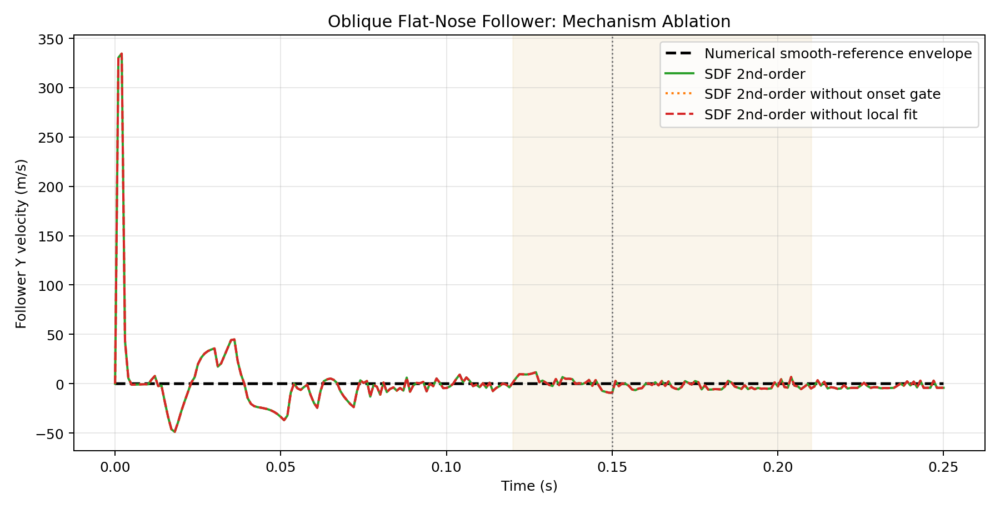

This stronger stress variant replaces the circular roller with a smooth rounded-rectangle shoe. The flatter nose creates a wider early-contact footprint, which is intended to make positive-gap onset candidates more competitive.
| Method | Runtime (s) | Vel RMSE (m/s) | Vel Max Abs (m/s) | Onset-window Vel RMSE (m/s) | Onset-window Vel Max Abs (m/s) | Detected motion onset (s) | Max fit attempted | Max fit applied | Max positive-gap reject |
|---|---|---|---|---|---|---|---|---|---|
| SDF 2nd-order | 23.445 | 32.251283 | 334.492981 | 4.740018 | 11.573933 | 0.001 | 14 | 5 | 0 |
| SDF 2nd-order without onset gate | 23.180 | 32.251283 | 334.492981 | 4.740018 | 11.573933 | 0.001 | 14 | 5 | 0 |
| SDF 2nd-order without local fit | 22.785 | 32.251283 | 334.492981 | 4.740018 | 11.573933 | 0.001 | 0 | 0 | 0 |

[SDF] Step 20 active contacts: 1 queried=9482 after_cap=1 fit_attempted=14 fit_applied=5 fit_reject=0[SDF] Step 20 active contacts: 1 queried=9482 after_cap=1 fit_attempted=14 fit_applied=5 fit_reject=0none